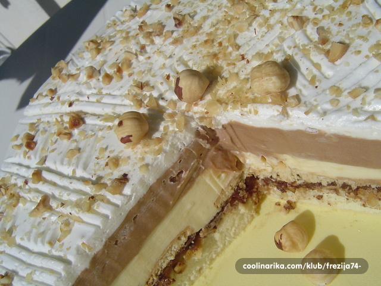

Hrana
Recepti za hranu, preporuke o dijetama, te najnovija istrazivanja o zdravoj hrani.
Monte torta
Priprema
1.LJEŠNJAKE popecite u rerni da potamne, ohladite ih pa ih kroz ruke trljajte da im otpadne korica. u malo boljim trgovinama imate za kupiti već oguljene i popečene.( ja kupim gotove.) stavite ih u čvršću krpu i malo ih stucite batom za meso, ali tako da ostanu i malo krupniji komadići.
2.
BISKVIT
bjelanjke tucite u čvrsti snijeg, dodajte šećer i na kraju lagano ubatite brašno najmanjom brzinom miksera.
kalup za torte promjera 26 cm namažite maslom, pobrašnite a na dno stavite masni papir.
na masni papir rasporedite istučene lješnjake i na njih oprezno rasporedite bjelanjke.
pecite 10-ak minuta na 180 °c. dok dobije malo boju. ohladite.
ohlađeni biskvit prevrnite na pladanj da vam biskvit bude dolje a lješnjaci na vrhu. lagano dignite masni papir. vratite obruč od forme za tortu.
3.KREMA
uvrite 8 dcl mlijeka sa vanil šećerom.
batite žumanjke sa šećerom. dodajte 2 vanil pudinga, 2 žlice brašna i dva dcl mlijeka. to ukuhajte u uvrelo mlijeko kao puding.ohlaadite uz povremeno miješanje da se ne stvori kožica.( ja stavim kremu s posudom u kojoj se kuhala u sudoper s hladnom vodom ide puno brže i miješam povremeno mikserom )
4.
margarin za kreme (ili maslo) izradite dobro sa šećerom u prahu pa dodajte u skroz hladnu kremu.
5.
ČOKOLADU otopite na pari, malo prohladite, pa dodajte u POLOVICU kreme. druga ostaje žuta.
6.
NUTELU malo isto zagrijte (da se lakše da mazat) pa je oprezno namažite na lješnjake.
7.
KEKSE izlomite na nepravilne komadiće ( 1 keks na 4-5 komada) i poredajte po nuteli. Keksa potrošite koliko vam treba da prekrijete cijelu površinu.
Bilo je upita da li staviti svih 25 dkg, ali to nije potrebno.
8.
SADA stavite na kekse žutu kremu, pa čokoladnu i stavite tortu da se hladi preko noći u hladnjak.
kada se ohladila dignite oprezno obruč i obilato namažite šlagom.
ukrasite po želji, ja pospem malo lješnjacima.
Izvor: www.coolinarka.com